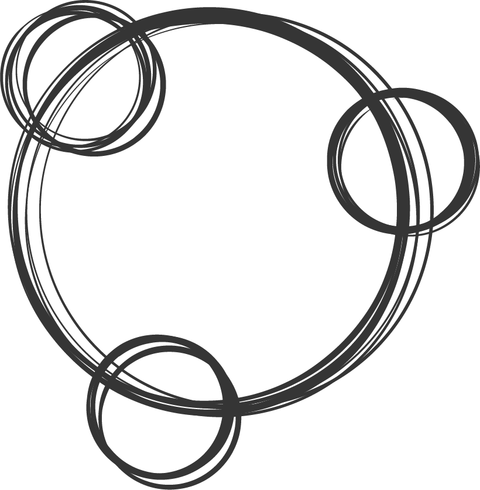

What I do
-

Collaborate
Working in an Agile environment, collaboration within small SCRUM teams is something I practice on a daily basis and feel is a valuable skill to posses which is best obtained from experience.
-

Design
Creating experiences that are meaningful and engaging yet reducing complexity for the end users is the approach I take every time I attempt to design or solve a problem with design. It helps keep the user at the forefront of all my design decisions and ensures the end result has a positive impact on viewer or end user.
-
Code
I enjoyed the versatility and accessibility of working with the web, the fast paced and ever changing nature of the internet and the variety of tools available. I have the ability to pick up and learn new skills, concepts and programming languages fairly well, and am able to incorprate these skills into all aspects of my work, not just Web.